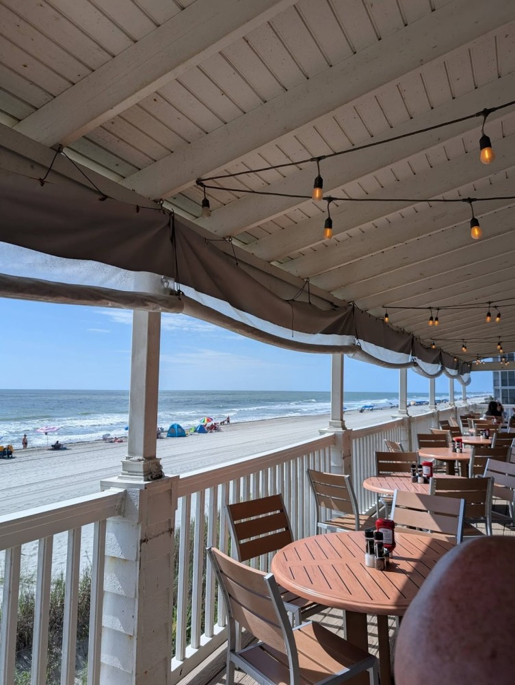
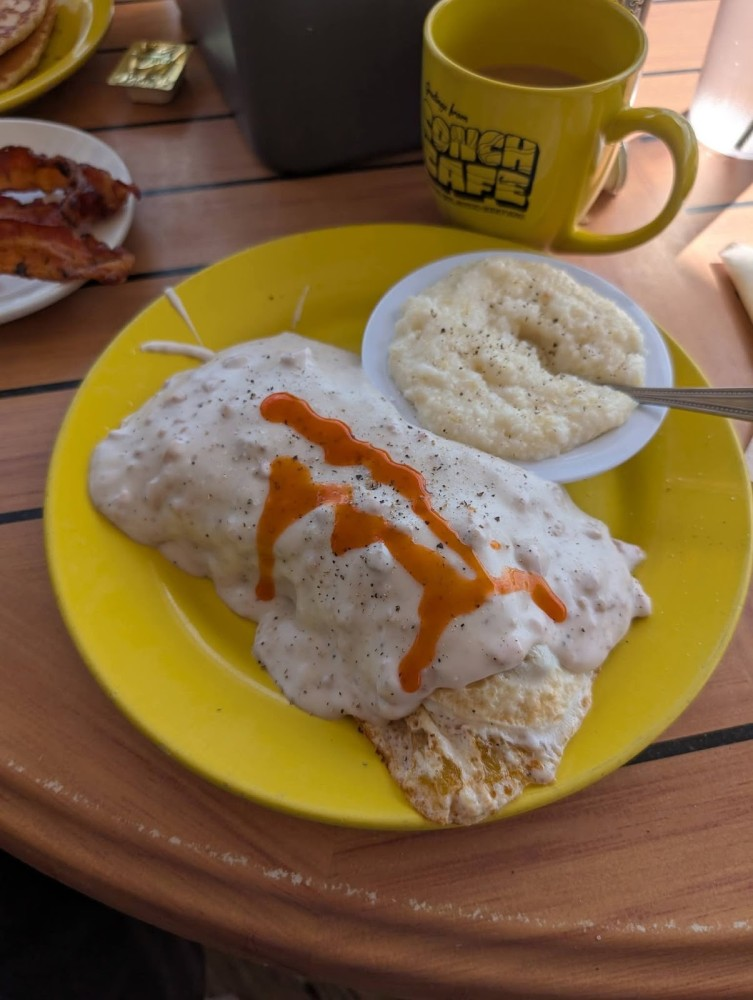
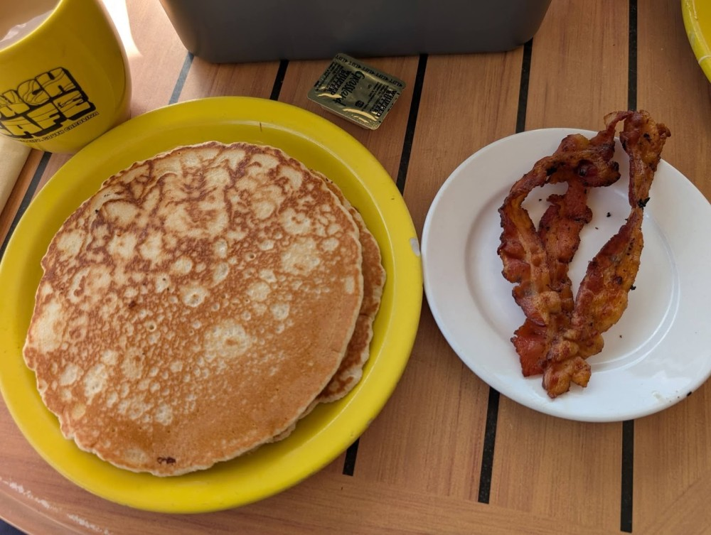
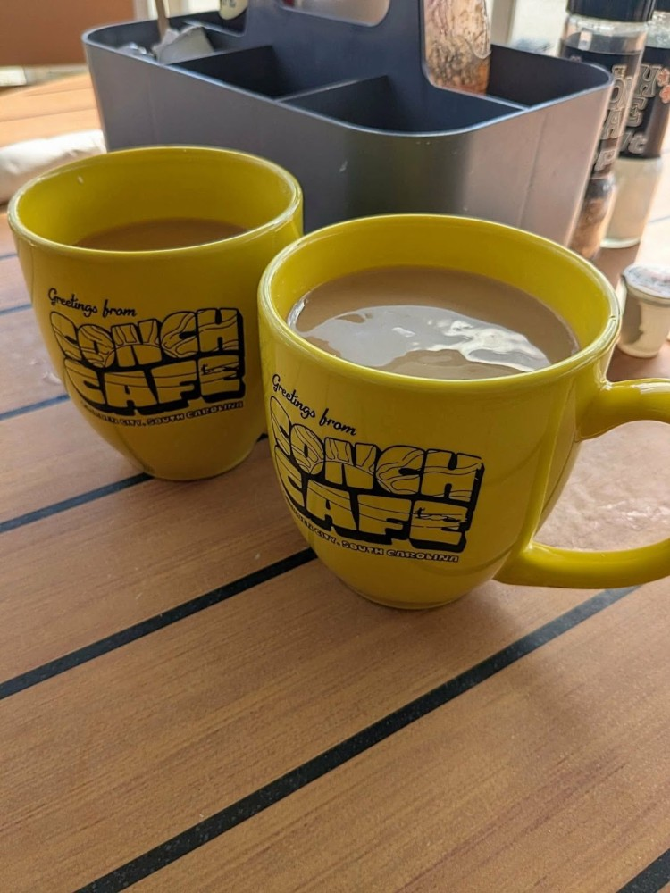
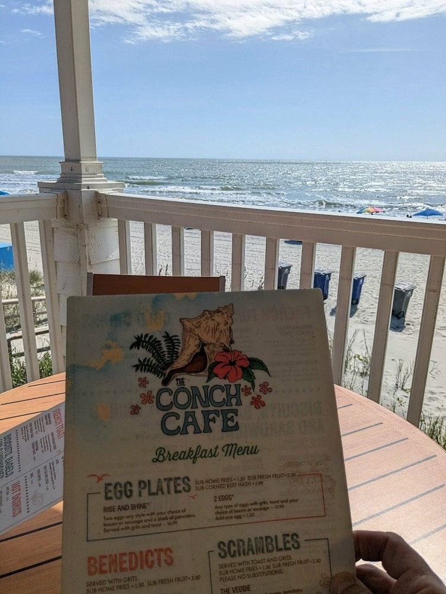

🐚 Conch Cafe
Conch Cafe is a moderately priced seafood restaurant in Garden City, South Carolina. We last checked this listing in November 2026.
- Location
- Garden City, SC
- Food
- Seafood · $$
- Hours
- Closed for the season, reopens in 2027
- Phone
- (843) 651-6556
- Good for
- Oceanfront, Waterfront, Breakfast
What to know about Conch Cafe
Local's note: My husband and I had breakfast here right before they closed for the season, and it was amazing! I had the pancakes and bacon, and he had an omelet smothered in gravy. We ate out on the deck right by the ocean and met the nicest couple with their little dog in a stroller. We loved the food so much we wanted to buy a couple of their coffee mugs to take home.
Photos from our visit





Restaurants near Conch Cafe
- 🍦
- 🍔
- 🥭
- 🍕
- 🍸
- 🍦
Common questions
Where is Conch Cafe?
Conch Cafe is in Garden City, SC. Nearby local spots include Painter's Homemade Ice Cream, Hamburger Joe's, Mango Thai.
What is Conch Cafe's phone number?
You can call Conch Cafe at (843) 651-6556.
Hours and prices change, especially between seasons. Call ahead or check Conch Cafe's website before you go. See something wrong? Email us and we will fix it.